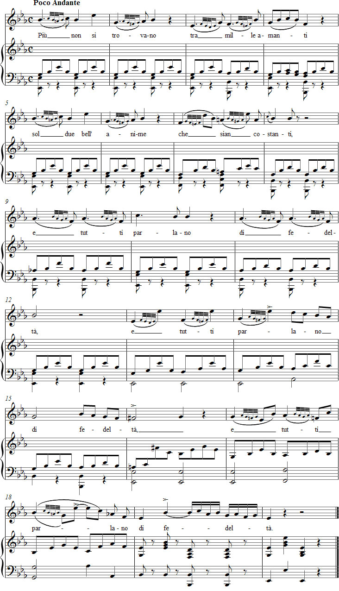

Vaccaj: Exercise 10b
Listen to the recording
Sheet music

Lyrics
Il gruppetto
Turns
to be found two noble souls that are faithful to each other
- and still everybody is talking about faithfulness.
Performance instructions
This exercise contains 18 gruppetti, which Vaccaj wrote out in small notes, although the turn symbol could just as well have been used. All the turns in this song begin above the principal note.
The previous exercise offers plenty of accented turns that follow the natural stresses of spoken language. In this exercise, their counterparts appear in bar 11 on the word fedelità.
The first twelve ornaments are notated as three thirty-second notes and one sixteenth note after a dotted quarter note, within the time span of three eighth notes. To understand their note values, it may be useful to take a pencil and carefully calculate their distribution. According to Sieber, when the principal note is repeated in the turn, its duration should equal that of the note beginning the melisma. Consequently, the fifth note of the melisma must be an eighth note in these twelve figures. The remaining quarter note is then divided into an eighth note and a sixteenth-note triplet.
The remaining six turns in the exercise are notated as four thirty-second notes together with a quarter note, within the time frame of two eighth notes.
Vaccaj's rhythmic ideas arise from the stressed first syllables of the poem's opening lines, and he uses them throughout the exercise. This once again creates various conflicts with the prosody of the poem.
Practice suggestions
You can begin practising by removing the small notes and the text. Sing the remaining melody on a suitable vowel or vowels. Concentrate on legato and phrasing so that only every other first beat is accented.
Next, add Metastasio's well-known poem to the melody, taking care that the words do not interfere with the legato.
Then omit the text again and add the turns. Sing the entire vocalise at a comfortable tempo (eighth note = M.M. 100).
Finally, combine the entire written score with the poem's biting irony. Notice how effectively Vaccaj interprets the text through the turn and a large upward leap. The metric "misinterpretations" can also emphasise the injustice described by the poet. The higher notes may be sung with strong accents to illustrate the ostentation with which everyone talks about faithfulness. By using coloratura alla cavalletta, that is, "pushing" the sixteenth notes with an h sound in bar 19, you can make the word fedeltà especially ironic.
In the last two phrases, you must breathe before di, even though a breath at the bar line does not usually feel like an organic place to breathe. Nothing prevents you from taking sufficient time for the breath and arriving late on the next first beat. Gradually increase the tempo until the quarter note is approximately M.M. 60.
Ideas for interpretation
The turn should be executable at an andante tempo, even if the entire figure is removed from bar 1 and the last two notes (si-do2) are sung as two sixteenth notes. Give the first note a quarter-note value and connect the four-thirty-second-note figure to si-do2-si-la. The same division also works in bar 7.
In the most common type of melisma in this exercise, the first note can be omitted, and two eighth notes together with an eighth-note triplet can be sung against the pianist's first figure. In bar 7, let the principal note replace the four thirty-second notes. With this division, a (poco) allegro tempo can then be reached without difficulty.
The exercise is marked tempo rubato.
In bar 15, the student can write their own turn.
Forshufvud, G. 1994. Con lieve fiato. Lärarhandledning till Nicola Vaccajs Metodo pratico. Göteborgs universitetet.